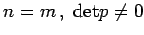
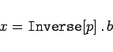
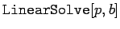

Inhalt Index DeskTop Bronstein

 Computeralgebrasysteme Anwendungen von Computeralgebrasystemen Elemente der linearen Algebra Mathematica
Computeralgebrasysteme Anwendungen von Computeralgebrasystemen Elemente der linearen Algebra Mathematica


Im Spezialfall  hat das inhomogene System eine eindeutige Lösung, die mit
|  | (20.68) |
sofort gefunden werden kann. Mit Mathematica können Systeme dieser Art mit etwa 50 Unbekannten in erträglicher Zeit in Abhängigkeit vom Computersystem gelöst werden. Eine äquivalente, jedoch eventuell schneller ermittelbare Lösung kann mit  gefunden werden.